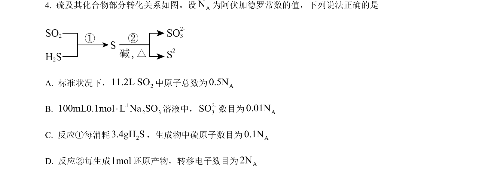
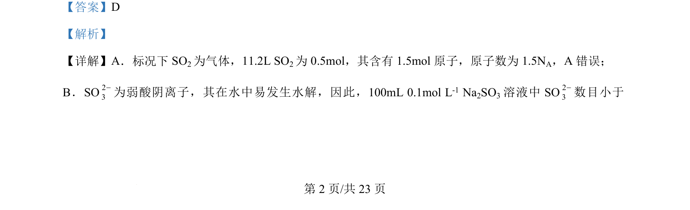
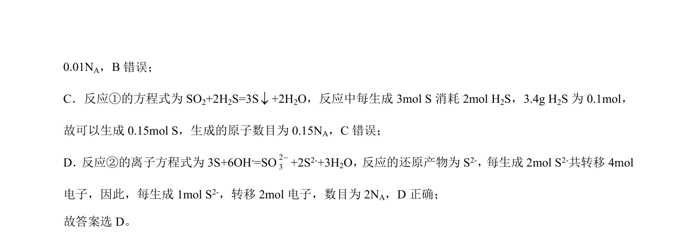

考点：阿伏加德罗常数 气体摩尔体积 盐类水解 氧化还原反应

考查阿伏加德罗常数相关计算，涉及气体摩尔体积、盐类水解及氧化还原转移电子数。


📄 原 PDF 第 2 页：
素材/真题/吉林/2008-2024·（吉林）化学高考真题/2024年高考化学试卷（辽宁）（解析卷）.pdf
【答案】D 【解析】 【详解】A．标况下 SO2为气体，11.2L SO2为 0.5mol，其含有 1.5mol原子，原子数为 1.5NA，A 错误； B．SO23-为弱酸阴离子，其在水中易发生水解，因此， 100mL 0.1mol L -1 Na2SO3溶液中 SO23-数目小于 为